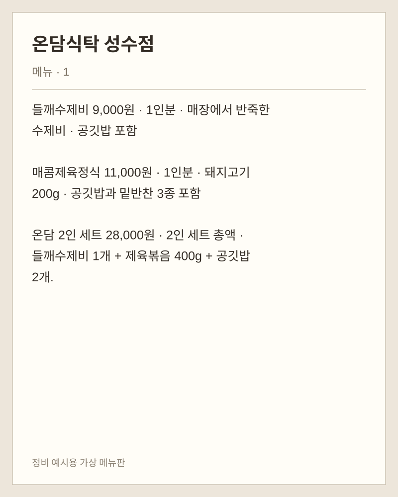
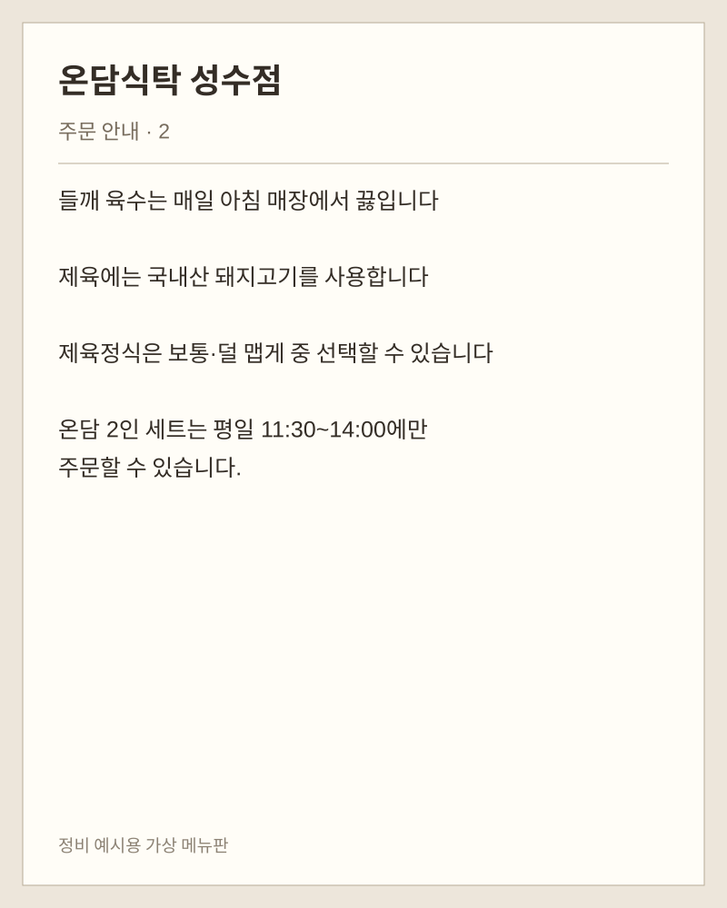

홈메뉴사진후기블로그랭킹메뉴32들깨수제비9,000원1인분 · 매장에서 반죽한 수제비와 매일 끓인 들깨 육수. 공깃밥 포함.매콤제육정식11,000원1인분 · 국내산 돼지고기 200g, 공깃밥, 밑반찬 3종 포함. 맵기 선택: 보통 / 덜 맵게.온담 2인 세트28,000원2인 세트 총액 · 들깨수제비 1개 + 제육볶음 400g + 공깃밥 2개.평일 11:30~14:00 주문 가능.